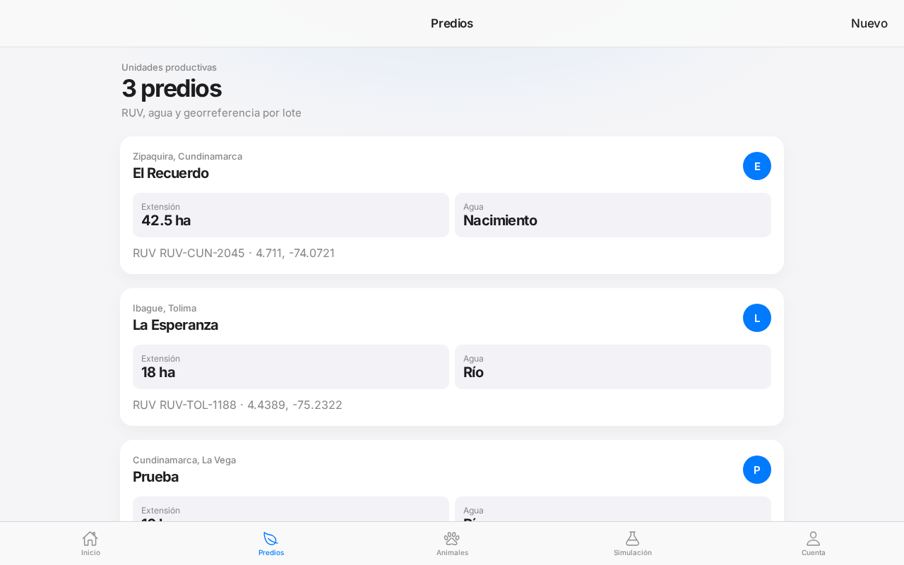
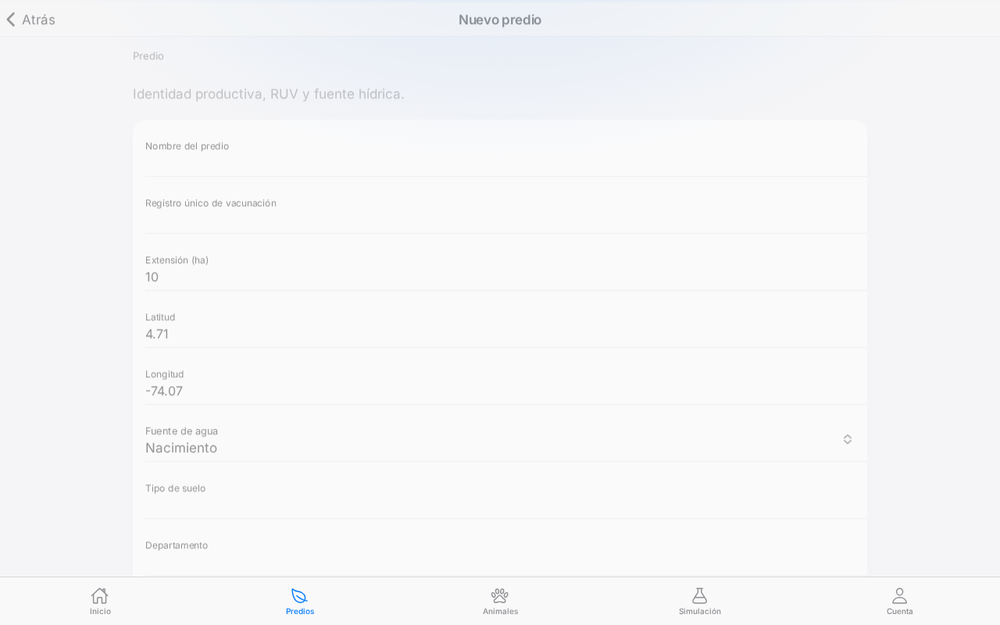
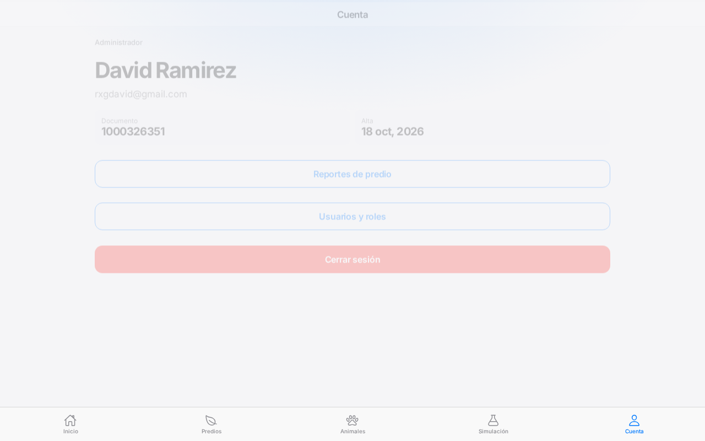
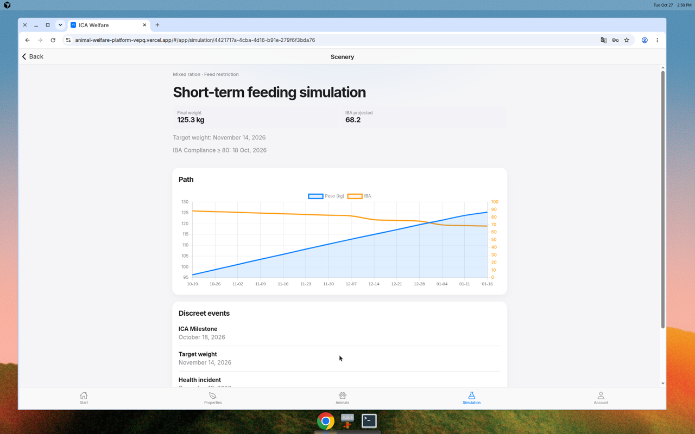

Pruebas de software y métricas de calidad
Informe de ejecución de pruebas
Plataforma de bienestar animal — Bienestar ICA
https://animal-welfare-platform-vepq.vercel.app
27 oct, 2026 (America/Bogota) · David Ramirez · rxgdavid@gmail.com (administrador)
1. Introducción
Bienestar ICA es una PWA (Ionic + Angular) para monitorear y simular el bienestar de bovinos, caprinos y porcinos según las cinco libertades y el semáforo ICA. El IBA, el THI y la simulación de eventos discretos corren en el cliente. La persistencia de producción está en Supabase y el frontend se publica en Vercel.
Esta campaña se ejecutó de verdad contra la URL desplegada y contra el código, no es un plan teórico. Cubre unitarias, aceptación, E2E, API, rendimiento, seguridad, calidad de código y CI, según el documento de clase.
2. Objetivos
- Verificar las fórmulas ICA (THI, semáforo 80/60, espacio mínimo, estrés calórico) con un oráculo independiente.
- Ejercitar el flujo real en Vercel: login, tablero, predios, animales, simulación, reportes, usuarios y cierre de sesión.
- Comprobar el contrato REST de Supabase (JWT, RLS, códigos HTTP).
- Medir el frontend bajo 20 usuarios concurrentes.
- Revisar controles OWASP sin payloads ofensivos.
- Dejar métricas tipo SonarQube y la suite en GitHub Actions.
3. Alcance
Incluido: autenticación, inventario, evaluación ICA, simulación, reportes, usuarios, API, TLS/cabeceras y calidad estática.
No incluido: apps nativas, carga destructiva sobre Postgres, fuzzing/exploits, WCAG formal. No se crearon cuentas nuevas ni se borró inventario.
4. Equivalencia con las herramientas del curso
| Tipo | Curso | Usado aquí | Resultado |
|---|---|---|---|
| Unitarias Java | JUnit | node:test sobre TypeScript real | 11/11 |
| Unitarias Python | pytest | pytest + oráculo ICA | 20/20 |
| Funcionales / E2E | Selenium / Playwright / Cypress | Playwright Chromium vs Vercel y local | 13/14 prod · logout OK local |
| API | Postman | Colección + pytest/requests | 10/10 |
| Rendimiento | Apache JMeter | 20 hilos × 3 hits | 2/2 |
| Aceptación | Cucumber | Gherkin en español + pytest | 3/3 |
| Seguridad | OWASP ZAP | TLS, HSTS, RLS, bundle, admin API | 6/6 + hallazgos |
| Calidad | SonarQube | Complejidad, duplicación, MI | Rating A |
| Gestión | TestRail | tests/catalog/testrail_cases.json | 41 casos |
| CI | Jenkins / GitHub Actions | .github/workflows/ci.yml | Configurado |
5. Entorno
| Frontend | https://animal-welfare-platform-vepq.vercel.app |
|---|---|
| Backend | https://gkomojjjyydbdajpxyqw.supabase.co |
| Usuario | rxgdavid@gmail.com · rol administrador |
| Datos | 3 predios, 6 animales, 4 usuarios |
| Local | http://localhost:4200 para verificar el arreglo de logout |
| Fecha | 27 oct, 2026, America/Bogota |
6. Estrategia
Pirámide clásica: oráculo unitario de las cinco libertades, Gherkin sobre esas reglas, E2E de los caminos de un administrador, API para el contrato con Postgres, y una pasada corta de carga + seguridad sobre el despliegue real. Los formularios de alta se abrieron sin pulsar Guardar.
7. Resultados por nivel
7.1 Unitarias
THI(30 °C, 80 % RH) = 82.92 (NRC). Semáforo IBA 80/60. Porcino en emergencia con THI ≥ 84. Espacio mínimo 4.5 / 1.5 / 0.85 m². Simulación determinista, un snapshot por día. El smoke check viejo esperaba 81.3; se corrigió el oráculo.
7.2 E2E Playwright (Vercel)
| Caso | Resultado |
|---|---|
| Login sentence case | Pass |
| Password inválido | Pass |
| Login válido · IBA 81.4 · VACA-087 en 45.5 | Pass |
| Guard sin sesión | Pass |
| Cerrar sesión | Fail en Vercel · Pass en local |
| Registro sin rol administrador | Pass |
| Tab bar, predios, porcino, reportes, usuarios, fechas | Pass |
7.3 API, rendimiento y seguridad
Anon no lista predios ni perfiles (RLS). Login inválido 400. JWT válido. 3 predios y 6 animales autenticados. 60 hits al home: media 35.9 ms, p95 53.4 ms, 0 % error. TLS + HSTS presentes. Admin API 403. Bundle sin service_role.
8. Defectos
| ID | Sev. | Resumen | Estado |
|---|---|---|---|
| DEF-01 | Alta | Logout en producción restaura la sesión porque signOut() no se esperaba. | Corregido en código; falta deploy |
| DEF-02 | Baja | ion-select muestra OK / Cancel en inglés. | Abierto |
| DEF-03 | Media | Faltaban X-Frame-Options, nosniff y Referrer-Policy. CSP no se forzó para no romper Angular. | Headers en vercel.json; falta deploy |
| DEF-04 | Baja | Bucket de fotos público por esquema. | Riesgo de diseño |
| DEF-05 | Baja | Login publica credenciales demo. | Abierto (prototipo) |
9. Métricas
| Casos automatizados | 66 |
|---|---|
| Pasados | 65 (el restante es DEF-01 en Vercel) |
| LOC / archivos | 5 043 / 39 |
| Mantenibilidad | 95.8 · rating A |
| Complejidad media | 8.13 (tope: store.service.ts = 61) |
| Error de carga | 0 % |
10. Conclusiones
El IBA y el inventario coinciden entre código, oráculo y Vercel. RLS no filtra datos al anónimo. El único corte de flujo de usuario es el logout publicado; ya está corregido en esta rama. No hace falta Grok Bot: la campaña corrió contra la URL real y se revalidó en local. La contraseña no se versiona (E2E_EMAIL / E2E_PASSWORD).
Recomendado: desplegar el logout, añadir cabeceras de seguridad en vercel.json, traducir OK/Cancel, y cargar los secrets de E2E en GitHub Actions.
11. Cómo reproducir
npx tsx --test tests/unit/domain.test.ts && pytest tests/unit tests/acceptance tests/api tests/security tests/performance -q
E2E_EMAIL=… E2E_PASSWORD=… npx playwright test --config tests/e2e/playwright.config.ts
Anexo. Evidencias











Una pasada exploratoria en Chrome tradujo la UI (El Recuerdo → The Memory, «3 predios» → «0 properties»). Playwright sin traductor muestra los conteos reales: 3 predios, 4 usuarios. No es un bug de inventario.